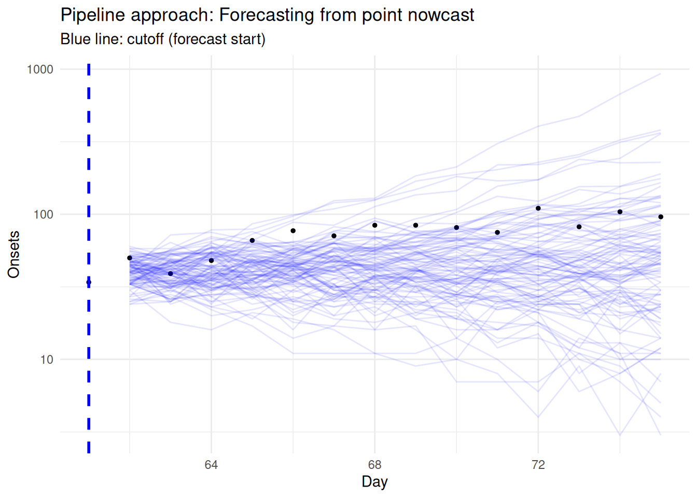
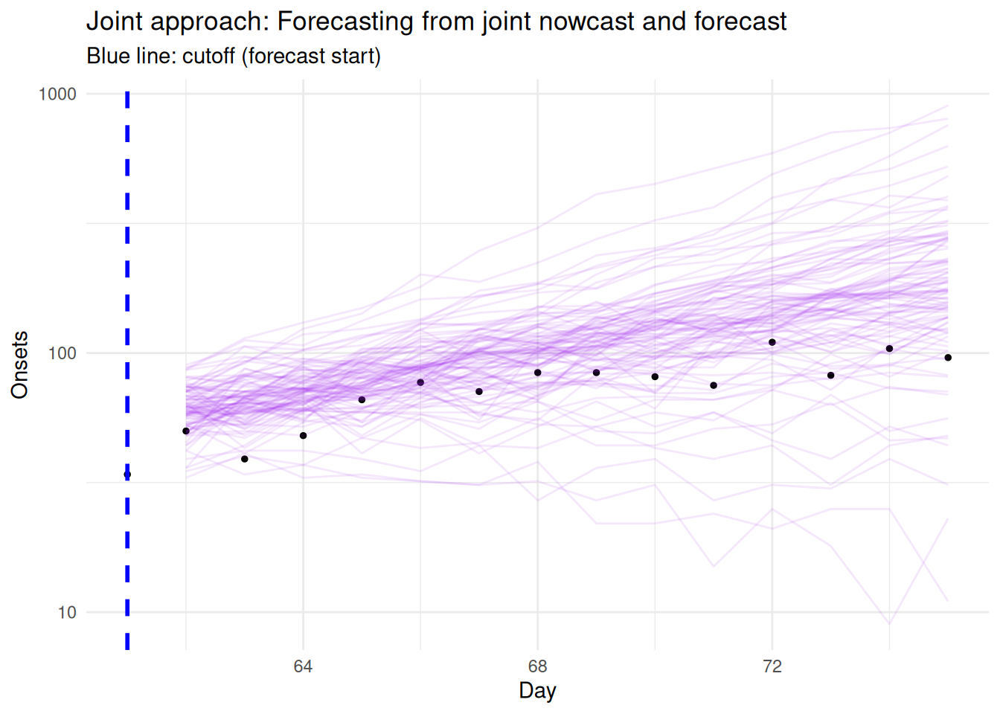
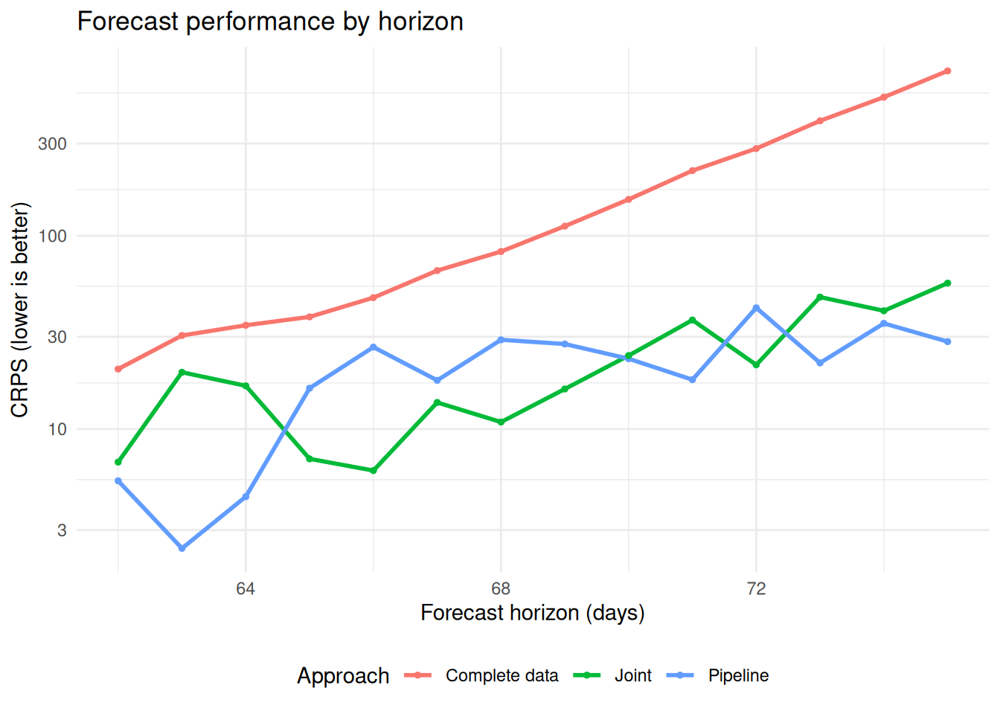

library("nfidd")
library("dplyr")
library("tidyr")
library("ggplot2")
library("tidybayes")
library("scoringutils")Combining nowcasting and forecasting
Introduction
In the previous sessions, we’ve explored nowcasting (estimating what current data will look like once all reports are in) and forecasting (predicting future trends) as separate problems. However, in real-time epidemic analysis, these challenges are connected. When we want to forecast from the most recent data, we face the problem that this data is incomplete due to reporting delays.
In this session, we’ll explore different approaches to handling this challenge, from simple methods that ignore the problem to joint models.
Slides
Objectives
This session aims to show how to combine nowcasting and forecasting to make better predictions when data are subject to reporting delays.
Setup
Source file
The source file of this session is located at sessions/forecasting-nowcasting.qmd.
Libraries used
In this session we will use the nfidd package to load a data set of infection times and access Stan models and helper functions, the dplyr and tidyr packages for data wrangling, ggplot2 library for plotting, the tidybayes package for extracting results of the inference, and scoringutils for forecast evaluation.
Tip
The best way to interact with the material is via the Visual Editor of RStudio.
Initialisation
We set a random seed for reproducibility. Setting this ensures that you should get exactly the same results on your computer as we do. We also set an option that makes cmdstanr show line numbers when printing model code. This is not strictly necessary but will help us talk about the models. Finally, we set an option to not warn about the partial definition of initial conditions.
set.seed(123)
options(cmdstanr_print_line_numbers = TRUE)
options(cmdstanr_warn_inits = FALSE)The challenge: forecasting with incomplete data
As we’ve seen in previous sessions, epidemiological data often arrives with delays. When we want to forecast future trends, we ideally want to use the most recent data available. However, this recent data is incomplete due to reporting delays.
The traditional approach is to wait until data is “complete” (or nearly so) before forecasting. But this might mean forecasting from data that is several weeks old (though more often a few days for most reporting to be complete). As we’ve seen, forecasts degrade quickly with longer forecast horizons, so even our forecasts of “what is happening now” might end up being quite uncertain.
The nowcasting-forecasting continuum
As we discussed in the renewal equation session, even nowcasting \(R_t\) in real-time is partly a forecast for recent time points due to delays from infection to the reporting of data. Nowcasting and forecasting aren’t distinct activities - they exist on a continuum:
- Nowcasting: We have some data from the dates we’re predicting
- Forecasting: We have no data from the dates we’re predicting
Some methods (particularly Bayesian generative models) make this connection explicit, while others require more thought about how to link these two tasks.
Simulating data for our analysis
We’ll start by generating synthetic data that mimics the challenges we face in real-time epidemic analysis. This builds on the approach from the joint nowcasting session, but now we’ll also create a dataset filtered at a two-week forecast horizon for evaluation (i.e. the data that we would ultimately observe for the two weeks after the forecast date).
Connecting to ILI forecasting
While we use the linelist data (individual symptom onsets with reporting delays) for clarity in this session, the forecasting sessions focus on ILI percentage data. These data types differ substantially:
Our simulated data:
- Individual events with systematic reporting delays
- Delays cause under-reporting that resolves over time
- Clear temporal progression: infection → onset → report
ILI surveillance data (from forecasting sessions):
- Compound measure: % of visits for influenza-like illness
- Can be revised up OR down as reports arrive
- Combines multiple diseases and reporting locations
Adapting these methods for ILI:
- The joint modelling framework can handle bidirectional revisions by modelling the full revision process with minor modifications
- Pipeline approaches may need separate models for upward and downward revisions
- Understanding the data generation process (how individual reports → ILI %) helps identify biases
- Performance may be limited by the complexity of the compound measure
The key insight is that whether dealing with simple delays or complex revisions, combining nowcasting and forecasting in a coherent framework improves predictions.
One approach that has been taken in previous work is to use the number of hospitals that have reported in order to estimate how much reporting revisions to expect. These data are actually available in the data we downloaded from epidatar earlier in the course.
Generate the underlying epidemic
First, let’s generate our simulated onset dataset as we did in previous sessions:
gen_time_pmf <- make_gen_time_pmf()
ip_pmf <- make_ip_pmf()
onset_df <- simulate_onsets(
make_daily_infections(infection_times), gen_time_pmf, ip_pmf
)
head(onset_df)# A tibble: 6 × 3
day onsets infections
<dbl> <int> <int>
1 1 0 0
2 2 0 1
3 3 0 0
4 4 1 2
5 5 0 1
6 6 0 1# Set our analysis cutoff point
cutoff <- 61
forecast_horizon <- 14 # We'll forecast 14 days aheadApply reporting delays
Now we’ll simulate reporting delays and create our reporting triangle:
reporting_delay_pmf <- censored_delay_pmf(
rlnorm, max = 15, meanlog = 1, sdlog = 0.5
)
plot(reporting_delay_pmf)reporting_triangle <- onset_df |>
filter(day <= cutoff + forecast_horizon) |>
mutate(
reporting_delay = list(
tibble(d = 0:15, reporting_delay = reporting_delay_pmf)
)
) |>
unnest(reporting_delay) |>
mutate(
reported_onsets = rpois(n(), onsets * reporting_delay)
) |>
mutate(reported_day = day + d)
# Filter to what would be observed by the cutoff
filtered_reporting_triangle <- reporting_triangle |>
filter(reported_day <= cutoff)
tail(filtered_reporting_triangle)# A tibble: 6 × 7
day onsets infections d reporting_delay reported_onsets reported_day
<dbl> <int> <int> <int> <table[1d]> <int> <dbl>
1 59 37 59 0 0.00363684 0 59
2 59 37 59 1 0.12356754 4 60
3 59 37 59 2 0.30290897 8 61
4 60 43 79 0 0.00363684 0 60
5 60 43 79 1 0.12356754 8 61
6 61 45 71 0 0.00363684 0 61Now we create the available onsets by summing reported onsets by day - this represents what we observe at the cutoff:
available_onsets <- filtered_reporting_triangle |>
summarise(available_onsets = sum(reported_onsets), .by = day)
tail(available_onsets)# A tibble: 6 × 2
day available_onsets
<dbl> <int>
1 56 33
2 57 32
3 58 21
4 59 12
5 60 8
6 61 0Create forecast evaluation datasets
For our analysis, we need two additional datasets:
- Complete data at forecast horizon: What we would observe up to the forecast horizon
- Filtered data for complete data approach: Data that is “complete” (i.e. expected to be fully reported) at the time of forecast
# Dataset 1: What we observe over the forecast horizon
complete_at_horizon <- reporting_triangle |>
filter(day <= cutoff + forecast_horizon) |>
summarise(complete_onsets = sum(reported_onsets), .by = day)
# Dataset 2: "Complete" data for complete data approach (e.g., >14 days old)
complete_threshold <- 14
complete_data <- available_onsets |>
filter(day <= cutoff - complete_threshold)
Choosing the “complete data” threshold
We’ve chosen 14 days as our threshold for “complete” data, but this is quite conservative. Let’s examine what proportion of reports we expect to have received by different delays:
# Calculate cumulative reporting proportions
reporting_cdf <- cumsum(reporting_delay_pmf)
tibble(
delay = 0:15,
pmf = reporting_delay_pmf,
cdf = reporting_cdf
) |>
filter(delay %in% c(1, 3, 5, 7, 10, 14)) |>
mutate(
`Proportion reported` = round(cdf, 3),
`Proportion missing` = round(1 - cdf, 3)
) |>
select(
`Days since onset` = delay,
`Proportion reported`,
`Proportion missing`
) |>
knitr::kable(caption = "Expected reporting completeness by delay")| Days since onset | Proportion reported | Proportion missing |
|---|---|---|
| 1 | 0.127 | 0.873 |
| 3 | 0.689 | 0.311 |
| 5 | 0.920 | 0.080 |
| 7 | 0.979 | 0.021 |
| 10 | 0.997 | 0.003 |
| 14 | 1.000 | 0.000 |
As we can see, after 5 days we expect to have received ~92% of reports, and after 7 days ~98%. Using a 14-day threshold means we’re losing 7-9 days of potentially useful data.
Trade-offs to consider:
- Less conservative thresholds (e.g., 5-7 days): Use more recent data but need to account for 5-15% missing reports
- More conservative thresholds (e.g., 14 days): Very complete data but lose recent epidemic trends
- Nowcasting approaches: Use all available data and explicitly model the reporting process
Try experimenting with different thresholds (e.g., complete_threshold <- 7) to see how it affects the forecasts!
Now lets visualise the different datasets
ggplot() +
geom_line(data = complete_at_horizon,
aes(x = day, y = complete_onsets, colour = "Complete data"),
linewidth = 1) +
geom_line(data = available_onsets,
aes(x = day, y = available_onsets, colour = "Available now"),
linewidth = 1) +
geom_line(data = complete_data,
aes(x = day, y = available_onsets, colour = "Complete as of now"),
linewidth = 1.2) +
geom_vline(xintercept = cutoff, linetype = "dotted") +
geom_vline(xintercept = cutoff - complete_threshold,
linetype = "dotted", alpha = 0.5) +
scale_colour_manual(
values = c(
"Complete data" = "black",
"Available now" = "red",
"Complete as of now" = "green"
)
) +
labs(
x = "Day",
y = "Onsets",
title = "Different views of the data",
colour = "Data type"
) +
guides(
colour = guide_legend(nrow = 2)) +
theme_minimal() +
theme(legend.position = "bottom")Approach 1: Complete data approach
The simplest approach is to filter to only “complete” data and forecast from there using the renewal model from the reproduction number session. We pick the renewal model as its generative process is consistent with the data we have (i.e. an outbreak). This throws away recent information but avoids the bias from right truncation.
We first load the renewal forecasting model:
renewal_model <- nfidd_cmdstan_model("estimate-inf-and-r-rw-forecast")
renewal_model 1: functions {
2: #include "functions/convolve_with_delay.stan"
3: #include "functions/renewal.stan"
4: #include "functions/geometric_random_walk.stan"
5: }
6:
7: data {
8: int n; // number of days
9: int I0; // number initially infected
10: array[n] int obs; // observed symptom onsets
11: int gen_time_max; // maximum generation time
12: array[gen_time_max] real gen_time_pmf; // pmf of generation time distribution
13: int<lower = 1> ip_max; // max incubation period
14: array[ip_max + 1] real ip_pmf;
15: int h; // number of days to forecast
16: }
17:
18: parameters {
19: real<lower = 0> init_R; // initial reproduction number
20: array[n-1] real rw_noise; // random walk noise
21: real<lower = 0, upper = 1> rw_sd; // random walk standard deviation
22: }
23:
24: transformed parameters {
25: array[n] real R = geometric_random_walk(init_R, rw_noise, rw_sd);
26: array[n] real infections = renewal(I0, R, gen_time_pmf);
27: array[n] real onsets = convolve_with_delay(infections, ip_pmf);
28: }
29:
30: model {
31: // priors
32: init_R ~ normal(1, 0.5) T[0, ];
33: rw_noise ~ std_normal();
34: rw_sd ~ normal(0, 0.05) T[0,];
35: obs ~ poisson(onsets[1:n]);
36: }
37: generated quantities {
38: array[h] real forecast;
39: if (h > 0) {
40: array[n + h - 1] real f_rw_noise;
41: for (i in 1:(n-1)) {
42: f_rw_noise[i] = rw_noise[i];
43: }
44: for (i in n:(n + h - 1)) {
45: f_rw_noise[i] = normal_rng(0, 1);
46: }
47: array[h + n] real f_R = geometric_random_walk(init_R, f_rw_noise, rw_sd);
48: array[h + n] real f_infections = renewal(I0, f_R, gen_time_pmf);
49: array[h + n] real f_onsets = convolve_with_delay(f_infections, ip_pmf);
50: for (i in 1:h) {
51: forecast[i] = poisson_rng(f_onsets[n + i]);
52: }
53: }
54: }
Reminder
These models are optimised for readability and not robustness or performance. For real-world versions of these models, see the EpiNow2 and epinowcast packages. For the more complex models we might also consider using approximtate fitting methods such as variational inference or integrated nested Laplace approximations.
Take 2 minutes
How does this model differ from the one we used in the Rt estimation session?
Solution
- The model is the same as the one we used in the Rt estimation session, but with an additional block where we generate the forecast for additional days beyond the observation period. To do this we need to regenerate the Rt samples for the additional days, and then use these to generate infections and onsets.
Now we fit the model to estimate Rt and forecast:
complete_data_fit <- nfidd_sample(
renewal_model,
data = list(
n = nrow(complete_data),
I0 = 10, # Initial number infected
obs = complete_data$available_onsets,
gen_time_max = length(gen_time_pmf),
gen_time_pmf = gen_time_pmf,
ip_max = length(ip_pmf) - 1,
ip_pmf = ip_pmf,
h = forecast_horizon + complete_threshold # Forecast to beyond cutoff
),
adapt_delta = 0.95,
max_treedepth = 12,
init = \() list(init_R = 1, rw_sd = 0.01)
)and extract forecast samples for analysis:
complete_data_forecasts <- complete_data_fit |>
gather_draws(forecast[day], ndraws = 100) |>
ungroup() |>
mutate(
actual_day = day + max(complete_data$day),
approach = "Complete data"
)
head(complete_data_forecasts)# A tibble: 6 × 8
day .chain .iteration .draw .variable .value actual_day approach
<int> <int> <int> <int> <chr> <dbl> <dbl> <chr>
1 1 3 486 1486 forecast 14 48 Complete data
2 1 3 136 1136 forecast 19 48 Complete data
3 1 1 165 165 forecast 23 48 Complete data
4 1 1 270 270 forecast 5 48 Complete data
5 1 2 149 649 forecast 18 48 Complete data
6 1 4 491 1991 forecast 14 48 Complete dataNow let’s visualise how this approach performs:
# Plot forecast from forecast date onwards
forecast_start_day <- max(complete_data$day)
evaluation_end_day <- max(complete_at_horizon$day)
ggplot() +
# Final observed data (truth) for evaluation period
geom_point(data = complete_at_horizon |>
filter(day >= forecast_start_day, day <= evaluation_end_day),
aes(x = day, y = complete_onsets),
color = "black", size = 1) +
# Complete data forecast ribbons from forecast start
geom_line(data = complete_data_forecasts |>
filter(actual_day >= forecast_start_day, actual_day <= evaluation_end_day),
aes(x = actual_day, y = .value, group = .draw),
color = "red", alpha = 0.1) +
# Mark cutoff date (when we actually want forecasts from)
geom_vline(xintercept = cutoff,
linetype = "dashed", color = "blue", linewidth = 1) +
scale_y_log10() +
xlim(forecast_start_day, evaluation_end_day) +
labs(
x = "Day",
y = "Onsets",
title = "Complete data approach",
subtitle = "Blue line: Forecast date"
) +
theme_minimal()Warning in scale_y_log10(): log-10 transformation introduced infinite values.
Take 5 minutes
Examine the complete data approach:
- How far back does the forecast have to start from?
- What happens to forecast uncertainty over the forecast horizon?
- Why might this approach miss recent changes in transmission?
- What key assumption does this make about data completeness?
Solution
- Forecast starts 14 days before cutoff: The approach has to start forecasting from day 57 (cutoff - 14) to reach day 71 (cutoff), creating a very longerforecast horizon
- Uncertainty grows: Forecasting over 28+ days (14 to reach cutoff + 14 forecast horizon) leads to very wide prediction intervals when using a random walk for \(R_t\)
- Misses recent transmission changes: Any changes in \(R_t\) in the recent 14 days are completely ignored, potentially missing important epidemiological trends
- Assumes perfect completeness: Assumes data >14 days old is completely reported, which may not be true for all reporting systems
Approach 2: Pipeline approach (point estimates)
Pipeline approaches vs joint models
In this session, we’ll explore different ways to combine nowcasting and forecasting. Building on methods from our earlier sessions, you could construct pipeline approaches using:
- Delay distribution estimation: Methods from the biases in delay distributions session to estimate reporting delays from individual-level data
- Simple nowcasting: The geometric random walk nowcasting model from the nowcasting concepts session
- Multiplicative baseline methods: Simple CDF-based scaling approaches using tools like
baselinenowcast - Reproduction number estimation: Methods from the R estimation session applied to the nowcasted data
Each component can be developed and validated independently, making pipeline approaches more modular and sometimes easier to debug. The trade-off is that uncertainty may not propagate correctly between components, and the assumptions of each component may not be consistent with each other.
As we’ll see, joint models that estimate nowcasts and forecasts together can address these limitations, but come with their own challenges in terms of complexity and computational requirements.
We start by fitting a geometric random walk nowcast to the reporting triangle data, as we did in the joint nowcasting session.
First, we load the joint nowcasting model:
geometric_nowcast_model <- nfidd_cmdstan_model("joint-nowcast")
geometric_nowcast_model 1: functions {
2: #include "functions/geometric_random_walk.stan"
3: #include "functions/observe_onsets_with_delay.stan"
4: #include "functions/combine_obs_with_predicted_obs_rng.stan"
5: }
6:
7: data {
8: int n; // number of days
9: int m; // number of reports
10: array[n] int p; // number of observations per day
11: array[m] int obs; // observed symptom onsets
12: int d; // number of reporting delays
13: }
14:
15: transformed data{
16: array[n] int P = to_int(cumulative_sum(p));
17: array[n] int D = to_int(cumulative_sum(rep_array(d, n)));
18: }
19:
20: parameters {
21: real<lower=0> init_onsets;
22: array[n-1] real rw_noise;
23: real<lower=0> rw_sd;
24: simplex[d] reporting_delay; // reporting delay distribution
25: }
26:
27: transformed parameters {
28: array[n] real onsets = geometric_random_walk(init_onsets, rw_noise, rw_sd);
29: array[m] real onsets_by_report = observe_onsets_with_delay(onsets, reporting_delay, P, p);
30: }
31:
32: model {
33: // Prior
34: init_onsets ~ normal(1, 5) T[0,];
35: rw_noise ~ std_normal();
36: rw_sd ~ normal(0, 0.05) T[0,];
37: reporting_delay ~ dirichlet(rep_vector(1, d));
38: // Likelihood
39: obs ~ poisson(onsets_by_report);
40: }
41:
42: generated quantities {
43: array[d*n] real complete_onsets_by_report = observe_onsets_with_delay(onsets, reporting_delay, D, rep_array(d, n));
44: array[n] int nowcast = combine_obs_with_predicted_obs_rng(obs, complete_onsets_by_report, P, p, d, D);
45: }
46: Now we fit the geometric nowcast to the reporting triangle:
geometric_nowcast_fit <- nfidd_sample(
geometric_nowcast_model,
data = list(
n = length(unique(filtered_reporting_triangle$day)),
m = nrow(filtered_reporting_triangle),
p = filtered_reporting_triangle |>
group_by(day) |>
filter(d == max(d)) |>
mutate(d = d + 1) |>
pull(d),
obs = filtered_reporting_triangle$reported_onsets,
d = 16
)
)From the nowcast posterior, we extract point estimates (medians) to use in the forecasting step. This loses uncertainty information.
# Extract nowcast point estimates
nowcast_estimates <- geometric_nowcast_fit |>
gather_draws(nowcast[day]) |>
median_qi(.value) |>
select(day, nowcast = .value)
tail(nowcast_estimates)# A tibble: 6 × 2
day nowcast
<int> <dbl>
1 56 38
2 57 39
3 58 33
4 59 31
5 60 40
6 61 37Now we use the renewal model to forecast from this point estimate.
Next, we fit the renewal model to our combined dataset:
pipeline_forecast_fit <- nfidd_sample(
renewal_model,
data = list(
n = nrow(nowcast_estimates),
I0 = 10, # Initial number infected
obs = round(nowcast_estimates$nowcast),
gen_time_max = length(gen_time_pmf),
gen_time_pmf = gen_time_pmf,
ip_max = length(ip_pmf) - 1,
ip_pmf = ip_pmf,
h = forecast_horizon
),
adapt_delta = 0.95,
max_treedepth = 12,
init = \() list(init_R = 1, rw_sd = 0.01)
)Finally, we extract the forecast samples:
pipeline_forecasts <- pipeline_forecast_fit |>
gather_draws(forecast[day], ndraws = 100) |>
ungroup() |>
mutate(
actual_day = day + max(nowcast_estimates$day),
approach = "Pipeline"
)
head(pipeline_forecasts)# A tibble: 6 × 8
day .chain .iteration .draw .variable .value actual_day approach
<int> <int> <int> <int> <chr> <dbl> <int> <chr>
1 1 2 358 858 forecast 38 62 Pipeline
2 1 2 188 688 forecast 35 62 Pipeline
3 1 3 394 1394 forecast 40 62 Pipeline
4 1 4 278 1778 forecast 41 62 Pipeline
5 1 1 393 393 forecast 38 62 Pipeline
6 1 2 443 943 forecast 58 62 PipelineWe can now visualise the pipeline forecast results:
# Plot pipeline forecast from cutoff onwards
ggplot() +
# Final observed data (truth) for evaluation period
geom_point(data = complete_at_horizon |>
filter(day >= cutoff, day <= cutoff + forecast_horizon),
aes(x = day, y = complete_onsets),
color = "black", size = 1) +
# Pipeline forecast ribbons from cutoff
geom_line(data = pipeline_forecasts |>
filter(actual_day >= cutoff, actual_day <= cutoff + forecast_horizon),
aes(x = actual_day, y = .value, group = .draw),
color = "blue", alpha = 0.1) +
# Mark cutoff date
geom_vline(xintercept = cutoff,
linetype = "dashed", color = "blue", linewidth = 1) +
scale_y_log10() +
xlim(cutoff, cutoff + forecast_horizon) +
labs(
x = "Day",
y = "Onsets",
title = "Pipeline approach: Forecasting from point nowcast",
subtitle = "Blue line: cutoff (forecast start)"
) +
theme_minimal()
Take 5 minutes
Compare this pipeline approach to the complete data approach:
- What additional information does it use?
- What are the limitations of using point estimates from the nowcast?
- How does this approach differ from the complete data approach?
- How might model mismatch between the geometric and renewal models affect results?
Solution
What additional information does it use?
- This approach uses all available data, including the recent truncated observations that were ignored in the complete data approach.
What are the limitations of using point estimates from the nowcast?
- It doesn’t include the uncertainty from the nowcast, leading to overconfident predictions.
- Point estimates ignore the full posterior distribution from the nowcasting step.
How does this approach differ from the complete data approach?
- It has lower variance than the complete data approach due to using more information.
- It appears slightly more biased towards under-predicting than the complete data approach.
How might model mismatch between the geometric and renewal models affect results?
- The geometric random walk and renewal equation represent different generative processes (Lison et al. 2024), which can lead to inconsistencies as we saw in the joint nowcasting session.
- This mismatch can create systematic biases and unrealistic uncertainty quantification.
Approach 3: Pipeline approach (with uncertainty)
This approach would sample from the nowcast posterior and then forecast from multiple trajectories. We describe the approach but don’t implement it as it’s computationally expensive.
The approach works as follows:
Sample multiple nowcast realisations: Instead of using point estimates from the geometric nowcast, we would sample 100+ different nowcast trajectories from the posterior distribution.
Forecast from each trajectory: For each of the 100+ nowcast samples, we would combine it with the older “complete” data and fit the renewal forecasting model separately.
Combine forecast distributions: We would then combine all the resulting forecast distributions to get final predictions that include some uncertainty from the nowcasting step.
Take 3 minutes
Consider this approach compared to Approaches 1 and 2:
- What advantage does it have over the simple pipeline approach?
- Why is it computationally expensive compared to a joint model?
- What problem does it still have regarding model consistency?
Solution
- Advantage: Unlike Approach 2, it propagates some uncertainty from the nowcast into the forecast, giving more realistic prediction intervals
- Computational cost: Requires fitting the renewal model many times (once per nowcast sample), making it slow compared to a single joint model fit
- Model mismatch remains: Still uses different generative processes (geometric for nowcast, renewal for forecast), creating inconsistencies (Lison et al. 2024)
Approach 4: Joint approach
This approach extends the joint nowcasting model to include forecasting, using a renewal process as the generative process throughout.
We start by loading the joint model:
joint_model <- nfidd_cmdstan_model("joint-nowcast-with-r")
joint_model 1: functions {
2: #include "functions/geometric_random_walk.stan"
3: #include "functions/renewal.stan"
4: #include "functions/convolve_with_delay.stan"
5: #include "functions/observe_onsets_with_delay.stan"
6: #include "functions/combine_obs_with_predicted_obs_rng.stan"
7: }
8:
9: data {
10: int n; // number of days
11: int m; // number of reports
12: array[n] int p; // number of observations per day
13: array[m] int obs; // observed symptom onsets
14: int d; // number of reporting delays
15: int gen_time_max; // maximum generation time
16: array[gen_time_max] real gen_time_pmf; // pmf of generation time distribution
17: int<lower = 1> ip_max; // max incubation period
18: array[ip_max + 1] real ip_pmf;
19: int h; // number of days to forecast
20: }
21:
22: transformed data{
23: array[n] int P = to_int(cumulative_sum(p));
24: array[n] int D = to_int(cumulative_sum(rep_array(d, n)));
25: }
26:
27: parameters {
28: real<lower = 0> init_I; // initial number of infected
29: real<lower = 0> init_R; // initial reproduction number
30: array[n-1] real rw_noise; // random walk noise
31: real<lower = 0> rw_sd; // random walk standard deviation
32: simplex[d] reporting_delay; // reporting delay distribution
33: }
34:
35: transformed parameters {
36: array[n] real R = geometric_random_walk(init_R, rw_noise, rw_sd);
37: array[n] real infections = renewal(init_I, R, gen_time_pmf);
38: array[n] real onsets = convolve_with_delay(infections, ip_pmf);
39: array[m] real onsets_by_report = observe_onsets_with_delay(onsets, reporting_delay, P, p);
40: }
41:
42: model {
43: // Prior
44: init_I ~ lognormal(0, 1);
45: init_R ~ normal(1, 0.5) T[0, ];
46: rw_noise ~ std_normal();
47: rw_sd ~ normal(0, 0.05) T[0,];
48: reporting_delay ~ dirichlet(rep_vector(1, d));
49: // Likelihood
50: obs ~ poisson(onsets_by_report);
51: }
52:
53: generated quantities {
54: array[d*n] real complete_onsets_by_report = observe_onsets_with_delay(onsets, reporting_delay, D, rep_array(d, n));
55: array[n] int nowcast = combine_obs_with_predicted_obs_rng(obs, complete_onsets_by_report, P, p, d, D);
56:
57: // Forecast the underlying onsets
58: array[h] real forecast;
59: if (h > 0) {
60: array[h + n - 1] real f_rw_noise;
61: for (i in 1:n-1) {
62: f_rw_noise[i] = rw_noise[i];
63: }
64: for (i in n:(h + n - 1)) {
65: f_rw_noise[i] = normal_rng(0, 1);
66: }
67: array[h + n] real f_R = geometric_random_walk(init_R, f_rw_noise, rw_sd);
68: array[h + n] real f_infections = renewal(init_I, f_R, gen_time_pmf);
69: array[h + n] real f_onsets = convolve_with_delay(f_infections, ip_pmf);
70: for (i in 1:h) {
71: forecast[i] = poisson_rng(f_onsets[n + i]);
72: }
73: }
74: }
75:
Take 3 minutes
What parts of the joint model allow for forecasting?
Solution
- The joint model includes a
generated quantitiesblock that generates forecasts for future days using the same renewal process as for the observed data. - The parameter
hspecifies the number of days to forecast beyond the observed data. - In the
generated quantitiesblock, the model simulates future random walk noise, extends the \(R_t\) trajectory, and generates future infections and onsets. - Forecasts are then drawn from the predictive distribution for each future day, ensuring that both nowcasting and forecasting are handled within a single, consistent generative framework.
- This is exactly the same as for the
renewal_modelas we are only forecasting the final number of onsets and not simulating the reporting process.
Now we fit the joint model with forecasting parameters:
joint_forecast_fit <- nfidd_sample(
joint_model,
data = list(
n = length(unique(filtered_reporting_triangle$day)),
m = nrow(filtered_reporting_triangle),
p = filtered_reporting_triangle |>
group_by(day) |>
filter(d == max(d)) |>
mutate(d = d + 1) |>
pull(d),
obs = filtered_reporting_triangle$reported_onsets,
d = 16,
gen_time_max = length(gen_time_pmf),
gen_time_pmf = gen_time_pmf,
ip_max = length(ip_pmf) - 1,
ip_pmf = ip_pmf,
h = forecast_horizon
),
adapt_delta = 0.99,
max_treedepth = 12,
init = \() list(init_R = 1, rw_sd = 0.01)
)We extract the joint results for forecasting:
joint_forecasts <- joint_forecast_fit |>
gather_draws(forecast[day], ndraws = 100) |>
ungroup() |>
mutate(
actual_day = day + max(filtered_reporting_triangle$day),
approach = "Joint"
)
tail(joint_forecasts)# A tibble: 6 × 8
day .chain .iteration .draw .variable .value actual_day approach
<int> <int> <int> <int> <chr> <dbl> <dbl> <chr>
1 14 2 173 673 forecast 226 75 Joint
2 14 3 300 1300 forecast 273 75 Joint
3 14 4 154 1654 forecast 802 75 Joint
4 14 3 70 1070 forecast 153 75 Joint
5 14 2 192 692 forecast 283 75 Joint
6 14 3 410 1410 forecast 94 75 Joint Finally, let’s visualise the joint nowcast results:
# Plot joint forecast from cutoff onwards
forecast_start_day <- cutoff
forecast_end_day <- cutoff + forecast_horizon
ggplot() +
# Final observed data (truth) for evaluation period
geom_point(data = complete_at_horizon |>
filter(day >= forecast_start_day, day <= forecast_end_day),
aes(x = day, y = complete_onsets),
color = "black", size = 1) +
# Joint model forecast ribbons from cutoff
geom_line(data = joint_forecasts |>
filter(actual_day >= forecast_start_day, actual_day <= forecast_end_day),
aes(x = actual_day, y = .value, group = .draw),
color = "purple", alpha = 0.1) +
# Mark cutoff date
geom_vline(xintercept = cutoff,
linetype = "dashed", color = "blue", linewidth = 1) +
scale_y_log10() +
xlim(forecast_start_day, forecast_end_day) +
labs(
x = "Day",
y = "Onsets",
title = "Joint approach: Forecasting from joint nowcast and forecast",
subtitle = "Blue line: cutoff (forecast start)"
) +
theme_minimal()
Take 5 minutes
What are the advantages of the joint model approach?
- How does it address the model mismatch problem?
- What uncertainties does it properly account for?
- Why might it perform better than the pipeline and complete data approaches?
- Why might it perform worse than the complete data approach?
Solution
How does it address the model mismatch problem?
The joint model uses a single consistent generative process, such as the renewal equation, for both nowcasting and forecasting.
This avoids the mismatch that can occur when different models are used for each task, for example, using a geometric random walk for forecasting and a renewal process for nowcasting.
By using the same model structure throughout, the joint approach ensures that assumptions about transmission and reporting are aligned across all time points.What uncertainties does it properly account for?
The joint model propagates all relevant sources of uncertainty, including those from reporting delays, nowcast estimates, and the evolution of \(R_t\).
It also accounts for the correlation between uncertainty in the nowcast and the forecast, which can be important for accurate prediction intervals.
This means that the uncertainty in the most recent data, which is incomplete, is properly reflected in the forecast.Why might it perform better than the pipeline and complete data approaches?
The joint model can perform better because it uses all available data, including the most recent but incomplete reports, and models the process that generates both the observed and unobserved data.
This allows it to make use of information that the pipeline approach, which separates nowcasting and forecasting, might miss.
By jointly modelling the entire process, it can provide more coherent and potentially more accurate forecasts, especially when the reporting process is well understood.Why might it perform worse than the complete data approach?
In some situations, the complete data approach, which waits for older data to become nearly complete before forecasting, might perform better.
This can happen if the most recent data are highly incomplete or unrepresentative, for example, due to sudden changes in reporting or the epidemic process.
In such cases, older data may provide a more stable basis for forecasting, even though it is less timely.
It may also underperform if the generative process is not consistent with the data we have. For example, if the growth rate of older data happens to be more consistent with the future growth rate of the epidemic, then the complete data approach will perform better. These issues indicate that the underlying generative process or forecast model could be improved to better capture changes in the epidemic or reporting dynamics.
Evaluation and comparison
We’ll evaluate all four approaches against what will finally be reported (our complete_at_horizon dataset) using proper scoring rules.
Prepare evaluation data
# Create evaluation dataset - what we're forecasting against
evaluation_data <- complete_at_horizon |>
filter(day > cutoff, day <= cutoff + forecast_horizon) |>
mutate(
forecast_horizon = day - cutoff,
observed = complete_onsets
) |>
select(day, forecast_horizon, observed)
head(evaluation_data)# A tibble: 6 × 3
day forecast_horizon observed
<dbl> <dbl> <int>
1 62 1 50
2 63 2 39
3 64 3 48
4 65 4 66
5 66 5 77
6 67 6 71Visualise all the forecasts together
As in all other sessions, we first visualise the forecasts together.
forecast_results <- bind_rows(
complete_data_forecasts |>
filter(actual_day > cutoff),
pipeline_forecasts,
joint_forecasts
)
forecast_results |>
ggplot(aes(x = actual_day, y = .value, group = .draw, color = approach)) +
geom_line(alpha = 0.1) +
geom_point(data = evaluation_data, aes(x = day, y = observed, group = NULL, color = NULL), color = "black", size = 1) +
scale_y_log10() +
labs(x = "Day", y = "Onsets", title = "All forecast approaches") +
theme_minimal() +
guides(color = guide_legend(
title = "Approach", override.aes = list(alpha = 1, linewidth = 1))
) +
theme(legend.position = "bottom") +
facet_wrap(vars(approach), ncol = 1)Warning in scale_y_log10(): log-10 transformation introduced infinite values.
Quantitative evaluation using scoringutils
Using scoringutils, We first create a forecast sample object
sc_forecasts <- forecast_results |>
left_join(evaluation_data, by = c("actual_day" = "day")) |>
group_by(approach, actual_day) |>
mutate(
.draw = row_number()
) |>
as_forecast_sample(
forecast_unit = c("approach", "actual_day"),
observed = "observed",
predicted = ".value",
sample_id = ".draw"
)
sc_forecastsForecast type: sampleForecast unit:approach and actual_day
sample_id predicted observed approach actual_day
<int> <num> <int> <char> <num>
1: 1 83 50 Complete data 62
2: 2 145 50 Complete data 62
3: 3 108 50 Complete data 62
4: 4 31 50 Complete data 62
5: 5 150 50 Complete data 62
---
4196: 96 273 96 Joint 75
4197: 97 802 96 Joint 75
4198: 98 153 96 Joint 75
4199: 99 283 96 Joint 75
4200: 100 94 96 Joint 75and then calculate the scores:
scores <- sc_forecasts |>
score()
head(scores) approach actual_day bias dss crps overprediction
<char> <num> <num> <num> <num> <num>
1: Complete data 62 0.25 13.53014 20.4381 1.78
2: Complete data 63 0.49 14.69952 30.4814 7.50
3: Complete data 64 0.40 15.81995 34.4264 6.48
4: Complete data 65 0.28 16.93241 38.0538 2.36
5: Complete data 66 0.12 18.00671 47.8366 0.36
6: Complete data 67 0.33 19.06576 66.0303 6.40
underprediction dispersion log_score mad ae_median se_mean
<num> <num> <num> <num> <num> <num>
1: 0 18.6581 4.983849 55.5975 15.0 23565.32
2: 0 22.9814 5.110518 64.4931 29.0 66594.96
3: 0 27.9464 5.188909 71.9061 27.5 158913.85
4: 0 35.6938 5.315048 83.0256 17.0 395238.54
5: 0 47.4766 5.524244 94.1451 10.0 1024224.96
6: 0 59.6303 5.665452 114.1602 37.0 2764006.00Overall performance table
We summarise the performance across all forecast horizons:
# Create summary table showing overall performance
overall_performance <- scores |>
summarise_scores(by = "approach") |>
arrange(crps)
knitr::kable(overall_performance,
caption = "Overall forecast performance by approach",
digits = 3)| approach | bias | dss | crps | overprediction | underprediction | dispersion | log_score | mad | ae_median | se_mean |
|---|---|---|---|---|---|---|---|---|---|---|
| Pipeline | -0.671 | 7.814 | 21.318 | 0.003 | 16.054 | 5.260 | 5.299 | 20.333 | 33.643 | 8.005450e+02 |
| Joint | 0.654 | 8.372 | 23.215 | 14.151 | 0.000 | 9.064 | 4.972 | 36.641 | 34.893 | 3.014737e+03 |
| Complete data | 0.325 | 20.203 | 193.802 | 6.913 | 0.000 | 186.889 | 5.898 | 137.564 | 39.536 | 2.580990e+08 |
Performance by forecast horizon
We examine how performance varies with forecast horizon:
# Calculate performance by horizon
horizon_performance <- scores |>
summarise_scores(by = c("approach", "actual_day"))
# Plot showing how performance varies by forecast horizon
ggplot(horizon_performance) +
aes(x = actual_day, y = crps, color = approach) +
geom_line(linewidth = 1) +
geom_point(size = 1) +
scale_y_log10() +
labs(
x = "Forecast horizon (days)",
y = "CRPS (lower is better)",
title = "Forecast performance by horizon",
color = "Approach"
) +
theme_minimal() +
theme(legend.position = "bottom")
Take 5 minutes
Compare the four approaches across the evaluation metrics
Solution
Note these results are stochastic. Why is this?
From this evaluation, we can see:
- Complete data approach: Performs much worse overall. Performance degrades rapidly with longer forecast horizons.
- Joint approach: Has comparable performance to the pipeline approach with some overprediction bias and higher dispersion, indicating greater uncertainty.
- Pipeline approach: Has some systematic underprediction bias, performs best at early and late forecast horizons, and performs worse at medium forecast horizons
To really understand the performance difference we would need to evaluate across multiple forecast dates.
Going further
Challenge
- Try implementing the pipeline approach with uncertainty propagation by sampling multiple nowcast trajectories and fitting the renewal model to each. How does this compare computationally and in terms of forecast accuracy to the other approaches?
- Experiment with different forecast horizons (7 days, 21 days, 28 days). How does the relative performance of each approach change with longer forecast horizons?
- Compare the approaches when there are changes in transmission (e.g., at different cut off dates) near the forecast date. Which methods are more robust to such changes?
Methods in practice
Several packages implement these concepts:
EpiNow2: Pipeline nowcasting and forecastingepinowcast: Joint nowcasting and forecasting in an efficient framework
Research has demonstrated that joint modelling of data sources provides significant advantages over combining estimates from separate models (Lison et al. 2024) when evaluating multiple nowcast dates. In practice, implementations often include hierarchical models for multiple locations, time-varying delays, and ensemble approaches for robustness.
Wrap up
- Review what you’ve learned in this session with the learning objectives
- Share your questions and thoughts
References
Lison, Adrian, Sam Abbott, Jana Huisman, and Tanja Stadler. 2024. “Generative Bayesian Modeling to Nowcast the Effective Reproduction Number from Line List Data with Missing Symptom Onset Dates.” PLOS Computational Biology 20 (4): e1012021. https://doi.org/10.1371/journal.pcbi.1012021.